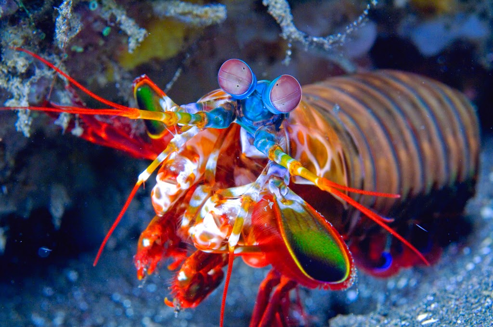

Stomatopoda
Fatos Sobre o Stomatopoda
O que é Stomatopoda?
Stomatopoda ( Odontodactylus scyllarus ), chamados popularmente de tamarutacas ou de lacraias-do-mar no Brasil, é uma ordem de crustáceos marinhos da subclasse Hoplocarida, que agrupa cerca de 400 espécies, caracterizadas principalmente pela morfologia da segunda pata torácica, que é modificada em apêndice subquelado, lembrando uma pata de louva-a-deus.
